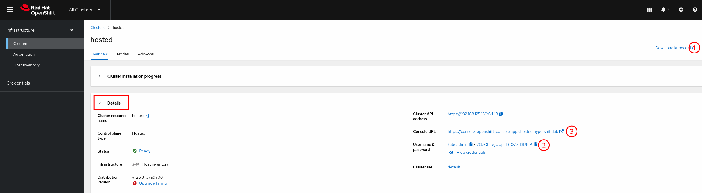
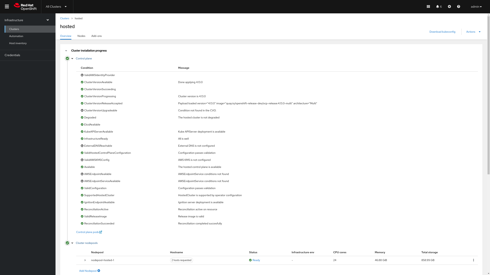

Accessing the Hosted Cluster
In the previous section we managed to see the control plane for the Hosted Cluster up and running as well as the two bare metal nodes being part of the Hosted Cluster. In this section we will learn how to get access to the Hosted Cluster and will run the required steps to move the Hosted Cluster deployment from Partial to Completed.
Getting the Kubeconfig and Kubeadmin user for the Hosted Cluster
We can get the Hosted Cluster credentials from either the Web UI or the CLI, we will see how to get it from both.
Getting the Kubeconfig and Kubeadmin via the Web Console
-
Go to the
hostedcluster view if you’re not already on it. You can get back to it by opening the OpenShift Console. Making sureAll Clustersis selected and clicking on the cluster namedhosted. -
Under
Cluster installation progressyou will see theDetailssection where you can get the Kubeconfig(1) and see the Kubeadmin credentials(2) as well as the OCP Console URL(3). -
We will see how to use the kubeconfig in the next section, the kubeadmin cannot be used yet since the Hosted Cluster ingress has not been setup and as such the OCP Console is not reachable, that’s something that we will fix in the next sections.
Getting the Kubeconfig and Kubeadmin via the CLI
-
In order to get the kubeconfig we can run the following command.
In the command below we’re redirecting the output to a file ~/hypershift-lab/hosted-kubeconfig.oc --kubeconfig ~/hypershift-lab/mgmt-kubeconfig -n hosted \ extract secret/hosted-admin-kubeconfig --to=- \ > ~/hypershift-lab/hosted-kubeconfig -
The kubeadmin password can be retrieved with the command below.
oc --kubeconfig ~/hypershift-lab/mgmt-kubeconfig -n hosted \ extract secret/hosted-kubeadmin-password --to=-The password is likely to be different in your environment. # password 7QzQh-kgUUp-T6Q77-DU8IP
Accessing the Hosted Cluster using the Kubeconfig
| Before using the Kubeconfig we need to edit one parameter. This is only required due to the lab setup we have, in a real scenario this change shouldn’t be required. We will be changing the kubeconfig’s API endpoint from the IP to the DNS record for the API. |
If you’re using MacOS, make sure you use gnused instead of sed, otherwise the command below will not make any change to the file. You can install gnused via brew → brew install gnused.
|
sed -i "s/192.168.125.150/api.hosted.hypershift.lab/" ~/hypershift-lab/hosted-kubeconfig-
We can access the HostedCluster now. We can see two nodes joined the cluster.
We need to use the --insecure-skip-tls-verify=truedue to the lab setup we have, in a real scenario this shouldn’t be required.oc --insecure-skip-tls-verify=true --kubeconfig ~/hypershift-lab/hosted-kubeconfig \ get nodesNAME STATUS ROLES AGE VERSION hosted-worker1 Ready worker 16m v1.26.3+b404935 hosted-worker2 Ready worker 16m v1.26.3+b404935 -
If we check the ClusterVersion it complains about some non-available operators.
oc --insecure-skip-tls-verify=true --kubeconfig ~/hypershift-lab/hosted-kubeconfig \ get clusterversionNAME VERSION AVAILABLE PROGRESSING SINCE STATUS version False True 25m Unable to apply 4.13.0: the cluster operator console is not available -
The ClusterOperators list will let us know which operators are not ready.
oc --insecure-skip-tls-verify=true --kubeconfig ~/hypershift-lab/hosted-kubeconfig \ get clusteroperatorsWe can see consoleandingressoperators are not ready. Let’s fix that.NAME VERSION AVAILABLE PROGRESSING DEGRADED SINCE MESSAGE console 4.13.0 False False False 14m RouteHealthAvailable: failed to GET route (https://console-openshift-console.apps.hosted.hypershift.lab): Get "https://console-openshift-console.apps.hosted.hypershift.lab": context deadline exceeded (Client.Timeout exceeded while awaiting headers) csi-snapshot-controller 4.13.0 True False False 25m dns 4.13.0 True False False 14m image-registry 4.13.0 True False False 14m ingress 4.13.0 True False True 25m The "default" ingress controller reports Degraded=True: DegradedConditions: One or more other status conditions indicate a degraded state: CanaryChecksSucceeding=False (CanaryChecksRepetitiveFailures: Canary route checks for the default ingress controller are failing) insights 4.13.0 True False False 14m kube-apiserver 4.13.0 True False False 25m kube-controller-manager 4.13.0 True False False 25m kube-scheduler 4.13.0 True False False 25m kube-storage-version-migrator 4.13.0 True False False 14m monitoring 4.13.0 True False False 13m network 4.13.0 True False False 14m node-tuning 4.13.0 True False False 17m openshift-apiserver 4.13.0 True False False 25m openshift-controller-manager 4.13.0 True False False 25m openshift-samples 4.13.0 True False False 13m operator-lifecycle-manager 4.13.0 True False False 25m operator-lifecycle-manager-catalog 4.13.0 True False False 25m operator-lifecycle-manager-packageserver 4.13.0 True False False 25m service-ca 4.13.0 True False False 14m storage 4.13.0 True False False 25m
Configuring the Hosted Cluster Ingress
In order to provide ingress capabilities to our Hosted Cluster we will use a LoadBalancer service. MetalLB is required for that, MetalLB is outside the scope of this lab, you can learn more about it here.
-
Let’s get MetalLB Operator deployed.
oc --insecure-skip-tls-verify=true --kubeconfig ~/hypershift-lab/hosted-kubeconfig \ apply -f https://raw.githubusercontent.com/RHsyseng/hypershift-baremetal-lab/lab-4.13/lab-materials/hosted-cluster/metallb-deployment.yaml sleep 5 oc --insecure-skip-tls-verify=true --kubeconfig ~/hypershift-lab/hosted-kubeconfig \ -n openshift-operators wait --for=jsonpath='{.status.state}'=AtLatestKnown \ subscription/metallb-operator --timeout=300s sleep 10 oc --insecure-skip-tls-verify=true --kubeconfig ~/hypershift-lab/hosted-kubeconfig \ -n openshift-operators wait --for=condition=Ready pod -l component=webhook-server \ --timeout=300s oc --insecure-skip-tls-verify=true --kubeconfig ~/hypershift-lab/hosted-kubeconfig \ apply -f https://raw.githubusercontent.com/RHsyseng/hypershift-baremetal-lab/lab-4.13/lab-materials/hosted-cluster/metallb-config.yamlsubscription.operators.coreos.com/metallb-operator created subscription.operators.coreos.com/metallb-operator condition met pod/metallb-operator-webhook-server-7f6cfc7959-mknpz condition met metallb.metallb.io/metallb created ipaddresspool.metallb.io/lab-network created l2advertisement.metallb.io/advertise-lab-network created -
Create the LoadBalancer service that exposes the OpenShift Routers.
cat <<EOF | oc --insecure-skip-tls-verify=true --kubeconfig ~/hypershift-lab/hosted-kubeconfig apply -f - kind: Service apiVersion: v1 metadata: annotations: metallb.universe.tf/address-pool: lab-network name: metallb-ingress namespace: openshift-ingress spec: ports: - name: http protocol: TCP port: 80 targetPort: 80 - name: https protocol: TCP port: 443 targetPort: 443 selector: ingresscontroller.operator.openshift.io/deployment-ingresscontroller: default type: LoadBalancer EOFservice/metallb-ingress created -
If we check the ClusterVersion finished cluster deployment now.
oc --insecure-skip-tls-verify=true --kubeconfig ~/hypershift-lab/hosted-kubeconfig \ get clusterversionIt can take up to 5 minutes for the clusterversion to move to complete. NAME VERSION AVAILABLE PROGRESSING SINCE STATUS version 4.13.0 True False 10s Cluster version is 4.13.0 -
Additionally we can check the HostedCluster state on the management cluster.
oc --insecure-skip-tls-verify=true --kubeconfig ~/hypershift-lab/mgmt-kubeconfig \ -n hosted get hostedcluster hostedIt can take up to 5 minutes for the hosted cluster to move to completed. NAME VERSION KUBECONFIG PROGRESS AVAILABLE PROGRESSING MESSAGE hosted 4.13.0 hosted-admin-kubeconfig Completed True False The hosted control plane is available -
We can also check in the Web Console that the Hosted Cluster deployment is completed now.

Accessing the Hosted Cluster using the OCP Console
You can point your browser to https://console-openshift-console.apps.hosted.hypershift.lab/ and access using the kubeadmin user and the kubeadmin password we retrieved in a previous step. You should see something similar to the image below.